Kolaborasi dan Peninjauan
Memeriksa Ejaan dan Tata Bahasa | Lacak Perubahan dan Komentar | Memeriksa dan Melindungi Dokumen
Memeriksa Ejaan dan Tata Bahasa (Checking Spelling and Grammar)
pengantar
Khawatir membuat kesalahan saat mengetik? Jangan. Word memberi Anda beberapa fitur pemeriksa ejaan —termasuk alat Ejaan dan Tata Bahasa —yang dapat membantu Anda menghasilkan dokumen yang profesional dan bebas kesalahan.
Untuk menjalankan pemeriksaan Ejaan dan Tata Bahasa:
Dari tab Tinjau, klik perintah Ejaan & Tata Bahasa.
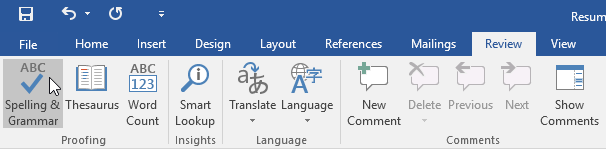
The Spelling dan Grammar pane akan muncul di sebelah kanan. Untuk setiap kesalahan dalam dokumen Anda, Word akan menawarkan satu atau beberapa saran. Klik saran untuk memperbaiki kesalahan.
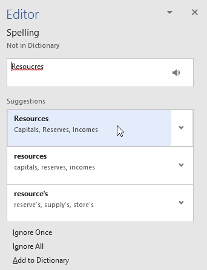
Word akan menelusuri setiap kesalahan hingga Anda meninjau semuanya. Setelah kesalahan terakhir ditinjau, kotak dialog akan muncul yang mengonfirmasi bahwa pemeriksaan ejaan dan tata bahasa telah selesai. Klik Oke.
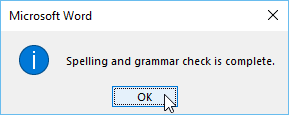
Jika tidak ada saran yang diberikan, Anda dapat mengetikkan ejaan yang benar secara manual di dokumen Anda.
Mengabaikan "kesalahan"
Pengecekan ejaan dan tata bahasa tidak selalu benar. Khususnya dengan tata bahasa, ada banyak kesalahan yang tidak disadari oleh Word. Ada juga saat ketika pemeriksaan ejaan dan tata bahasa akan mengatakan ada sesuatu yang salah padahal sebenarnya tidak. Ini sering terjadi dengan nama dan kata benda lainnya, yang mungkin tidak ada dalam kamus.
Jika Word mengatakan ada sesuatu yang salah, Anda dapat memilih untuk tidak mengubahnya. Tergantung pada apakah itu kesalahan ejaan atau tata bahasa, Anda dapat memilih dari beberapa opsi.
Untuk ejaan "kesalahan":
Abaikan Sekali : Ini akan melewati kata tanpa mengubahnya.
Abaikan Semua : Ini akan melewati kata tanpa mengubahnya, dan juga akan melewati semua contoh kata lain dalam dokumen.
Tambahkan ke Kamus : Ini menambahkan kata ke kamus sehingga tidak akan pernah muncul sebagai kesalahan. Pastikan kata dieja dengan benar sebelum memilih opsi ini.
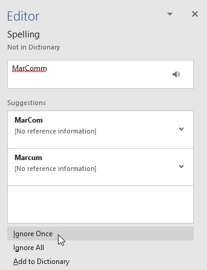
Untuk "kesalahan" tata bahasa:
Abaikan Sekali : Ini akan melewati kata atau frasa tanpa mengubahnya.
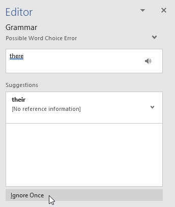
Pengecekan ejaan dan tata bahasa otomatis
Secara default, Word secara otomatis memeriksa dokumen Anda untuk kesalahan ejaan dan tata bahasa, sehingga Anda bahkan mungkin tidak perlu menjalankan pemeriksaan terpisah. Kesalahan ini ditunjukkan oleh garis berwarna di bawah teks.
Garis merah menunjukkan kata yang salah eja.
Garis biru menunjukkan kesalahan tata bahasa, yang dapat mencakup kata-kata yang disalahgunakan.
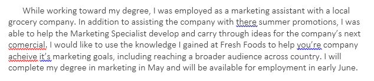
Sebuah kata disalahgunakan -juga dikenal sebagai ejaan kontekstual kesalahan-terjadi ketika sebuah kata dieja dengan benar tetapi digunakan secara tidak benar. Misalnya, jika Anda menggunakan frasa Deer Mr. Theodore di awal huruf, deer akan menjadi kesalahan ejaan kontekstual. Rusa dieja dengan benar, tetapi digunakan secara tidak benar dalam surat itu. Kata yang tepat adalah Sayang.
Untuk memperbaiki kesalahan ejaan:
Klik kanan kata yang digarisbawahi, lalu pilih ejaan yang benar dari daftar saran.
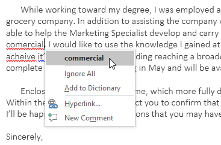
Kata yang dikoreksi akan muncul di dokumen.
Anda juga dapat memilih untuk Mengabaikan Semua contoh kata yang digarisbawahi atau menambahkannya ke kamus.
Untuk memperbaiki kesalahan tata bahasa:
Klik kanan kata atau frasa yang digarisbawahi, lalu spilih ejaan atau frasa yang benar dari daftar saran.
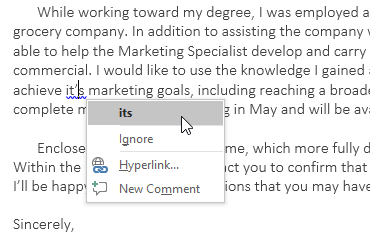
Frasa yang dikoreksi akan muncul di dokumen.
Untuk mengubah pengaturan pemeriksaan ejaan dan tata bahasa otomatis:
Klik tab File untuk mengakses tampilan Backstage, lalu klik Options.

Sebuah kotak dialog akan muncul. Di sisi kiri kotak dialog, pilih Pemeriksaan. Dari sini, Anda memiliki beberapa opsi untuk dipilih. Misalnya, jika Anda tidak ingin Word menandai kesalahan ejaan, kesalahan tata bahasa, atau kata yang sering membingungkan secara otomatis, cukup hapus centang pada opsi yang diinginkan.
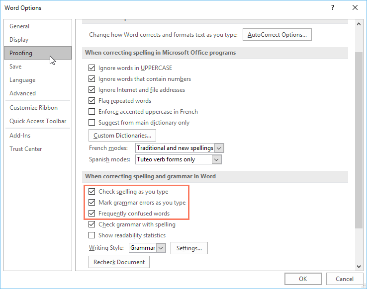
Jika Anda telah menonaktifkan pemeriksaan ejaan dan/atau tata bahasa otomatis, Anda masih dapat membuka tab Tinjau dan klik perintah Ejaan & Tata Bahasa untuk menjalankan pemeriksaan baru.
Untuk menyembunyikan kesalahan ejaan dan tata bahasa dalam dokumen:
Jika Anda berbagi dokumen seperti resume dengan seseorang, Anda mungkin tidak ingin orang itu melihat garis merah dan biru. Menonaktifkan pemeriksaan ejaan dan tata bahasa otomatis hanya berlaku untuk komputer Anda, sehingga garis mungkin masih muncul saat orang lain melihat dokumen Anda. Untungnya, Word memungkinkan Anda untuk menyembunyikan kesalahan ejaan dan tata bahasa sehingga baris tidak akan muncul di komputer mana pun.
Klik tab File untuk menuju ke tampilan Backstage, lalu klik Options.
Sebuah kotak dialog akan muncul. Pilih Proofing, lalu centang kotak di samping Hide spelling errors in this document only dan Hide grammar errors in this document only, lalu klik OK.
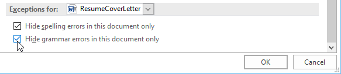
Garis-garis dalam dokumen akan disembunyikan.
Tantangan!
Buka dokumen latihan kami. Jika Anda sudah mengunduh dokumen latihan kami untuk mengikuti pelajaran, pastikan untuk mengunduh salinan baru dengan mengeklik tautan di langkah ini.
Jalankan pemeriksaan Ejaan & Tata Bahasa.
Abaikan ejaan nama seperti Marcom.
Perbaiki semua kesalahan ejaan dan tata bahasa lainnya.
Setelah selesai, dokumen Anda akan terlihat seperti ini:
Lacak Perubahan dan Komentar (Track Changes and Comments)
Katakanlah seseorang meminta Anda untuk mengoreksi atau berkolaborasi pada sebuah dokumen. Jika Anda memiliki salinan tercetak, Anda dapat menggunakan pena merah untuk mencoret kalimat, menandai salah eja, dan menambahkan komentar di margin. Word memungkinkan Anda melakukan semua hal ini secara elektronik menggunakan fitur Lacak Perubahan dan Komentar.
Memahami Perubahan Lacak
Saat Anda mengaktifkan Lacak Perubahan, setiap perubahan yang Anda buat pada dokumen akan muncul sebagai markup berwarna. Jika Anda menghapus teks, itu tidak akan hilang; sebagai gantinya, teks akan menyeberang keluar. Jika Anda menambahkan teks, itu akan digarisbawahi. Ini memungkinkan Anda untuk melihat hasil edit sebelum membuat perubahan permanen.
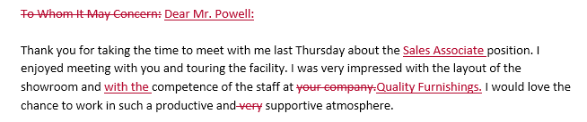
Jika ada beberapa pengulas, setiap orang akan diberi warna markup yang berbeda.
Untuk mengaktifkan Lacak Perubahan:
Dari tab Tinjau, klik perintah Lacak Perubahan.
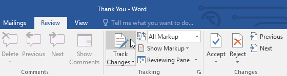
Lacak Perubahan akan diaktifkan. Mulai saat ini, setiap perubahan yang Anda buat pada dokumen akan muncul sebagai markup berwarna.
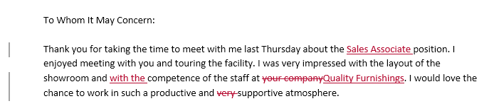
Perubahan terlacak Anda mungkin terlihat berbeda dari yang terlihat di atas, tergantung pada pengaturan markup komputer Anda.
Meninjau perubahan
Perubahan yang dilacak sebenarnya hanyalah perubahan yang disarankan. Untuk menjadi permanen, mereka harus diterima. Di sisi lain, penulis asli mungkin tidak setuju dengan beberapa perubahan yang dilacak dan memilih untuk menolaknya.
Untuk menerima atau menolak perubahan:
Pilih perubahan yang ingin Anda terima atau tolak.
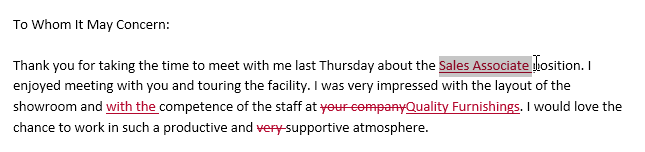
Dari tab Tinjau, klik perintah Terima atau Tolak.
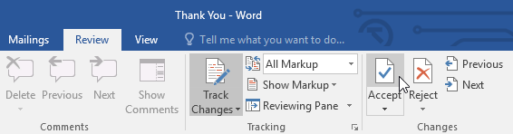
Markup akan hilang, dan Word akan secara otomatis melompat ke perubahan berikutnya. Anda dapat terus menerima atau menolak setiap perubahan hingga Anda meninjau semuanya.
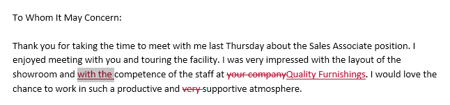
Setelah selesai, klik Track Changes perintah untuk mengubah off Track Changes.
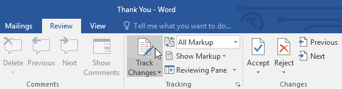
Untuk menerima semua perubahan sekaligus, klik Terima drop-down panah, lalu pilih Terima Semua. Jika Anda tidak ingin lagi melacak perubahan, Anda dapat memilih Terima Semua dan Hentikan Pelacakan.
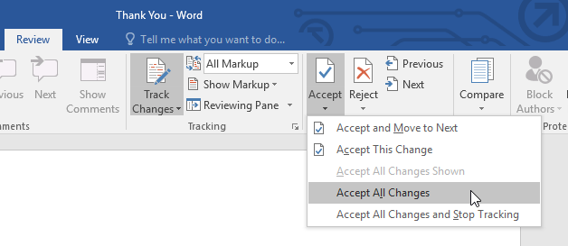
Opsi tampilan Lacak Perubahan
Jika Anda memiliki banyak perubahan terlacak, perubahan tersebut dapat mengganggu jika Anda mencoba membaca dokumen. Untungnya, Word menyediakan beberapa cara untuk menyesuaikan bagaimana perubahan terlacak muncul:
Markup Sederhana : Ini menunjukkan versi final tanpa markup sebaris. Penanda merah akan muncul di margin kiri untuk menunjukkan di mana perubahan telah dilakukan.
All Markup : Ini menunjukkan versi final dengan markup sebaris.
No Markup : Ini menunjukkan versi final dan menyembunyikan semua markup.
Asli : Ini menunjukkan versi asli dan menyembunyikan semua markup.
Untuk menyembunyikan perubahan terlacak:
Dari tab Review, klik perintah Display for Review di sebelah kanan perintah Track Changes.
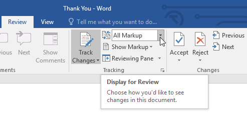
Pilih opsi yang diinginkan dari menu tarik-turun. Dalam contoh kami, kami akan memilih Tanpa Markup untuk melihat pratinjau versi final dokumen sebelum menerima perubahan.
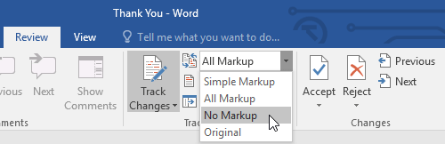
Anda juga dapat mengeklik penanda di margin kiri untuk beralih antara Markup Sederhana dan Semua Markup.
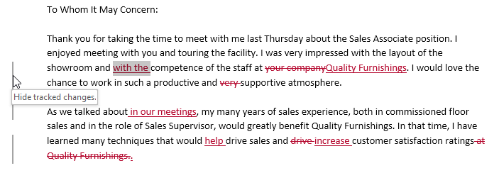
Ingatlah bahwa menyembunyikan Lacak Perubahan tidak sama dengan meninjau perubahan. Anda masih harus menerima atau menolak perubahan sebelum mengirimkan versi final dokumen Anda.
Untuk menampilkan revisi dalam balon:
Sebagian besar revisi muncul sebaris, artinya teks itu sendiri ditandai. Anda juga dapat memilih untuk menampilkan revisi dalam balon, yang memindahkan sebagian besar revisi ke margin kanan. Menghapus markup sebaris dapat membuat dokumen lebih mudah dibaca, dan balon juga menawarkan informasi yang lebih mendetail tentang beberapa markup.
Dari tab Tinjauan, klik Tampilkan Markup > Balon > Tampilkan Revisi di Balon.
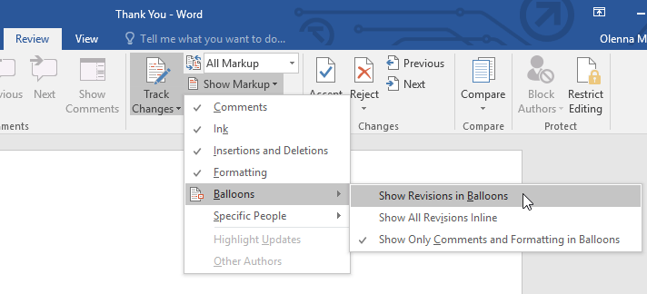
Sebagian besar revisi akan muncul di margin kanan, meskipun teks yang ditambahkan akan tetap muncul sebaris.
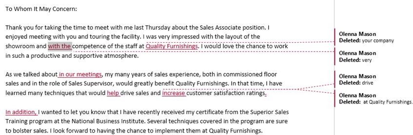
Untuk kembali ke markup sebaris, Anda dapat memilih Tampilkan Semua Revisi Sebaris atau Tampilkan Hanya Komentar dan Pemformatan dalam Balon.
Komentar
Terkadang Anda mungkin ingin menambahkan komentar untuk memberikan umpan balik alih-alih mengedit dokumen. Meskipun sering digunakan dalam kombinasi dengan Lacak Perubahan, Anda tidak perlu mengaktifkan Lacak Perubahan untuk menambahkan komentar.
Untuk menambahkan komentar:
Sorot beberapa teks, atau tempatkan titik penyisipan di tempat Anda ingin komentar muncul.
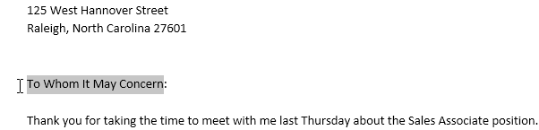
Dari tab Review, klik perintah New Comment.
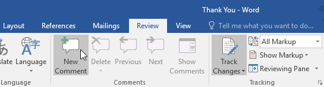
Ketik komentar Anda. Setelah selesai, Anda dapat menutup kotak komentar dengan menekan tombol Esc atau dengan mengklik di mana saja di luar kotak komentar.
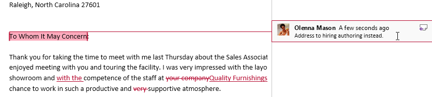
Untuk menghapus komentar:
Pilih komentar yang ingin Anda hapus.
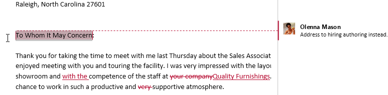
Dari tab Tinjau, klik perintah Hapus.
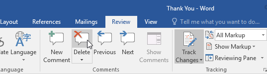
Komentar akan dihapus.
Untuk menghapus semua komentar, klik Hapus panah drop-down dan pilih Hapus Semua Komentar di Dokumen.
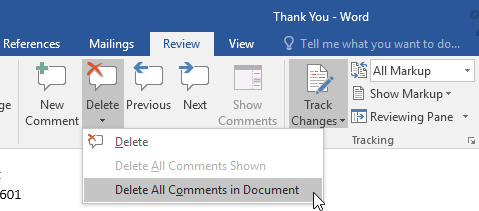
Membandingkan dokumen
Jika Anda mengedit dokumen tanpa melacak perubahan, Anda masih dapat menggunakan fitur peninjauan seperti Terima dan Tolak. Anda dapat melakukan ini dengan membandingkan dua versi dokumen. Yang Anda butuhkan hanyalah dokumen asli dan dokumen yang direvisi (dokumen juga harus memiliki nama file yang berbeda).
Untuk membandingkan dua dokumen:
Dari tab Tinjau, klik perintah Bandingkan, lalu pilih Bandingkan dari menu tarik-turun.
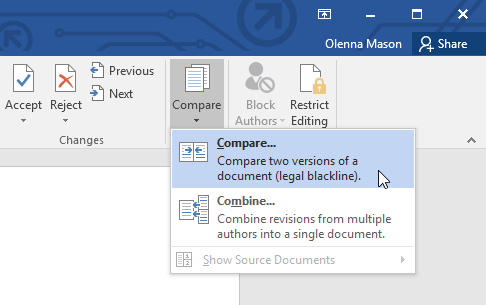
Sebuah kotak dialog akan muncul. Pilih dokumen Asli Anda dengan mengklik panah drop-down dan memilih dokumen dari daftar. Jika file tidak ada dalam daftar, klik tombol Browse untuk menemukannya.
Pilih dokumen Revisi, lalu klik OK.
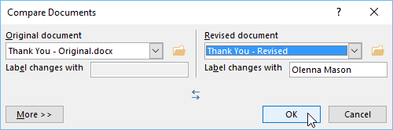
Word akan membandingkan dua file untuk menentukan apa yang diubah dan kemudian membuat dokumen baru. Perubahan akan muncul sebagai markup berwarna, seperti Track Changes. Anda kemudian dapat menggunakan perintah Terima dan Tolak untuk menyelesaikan dokumen.
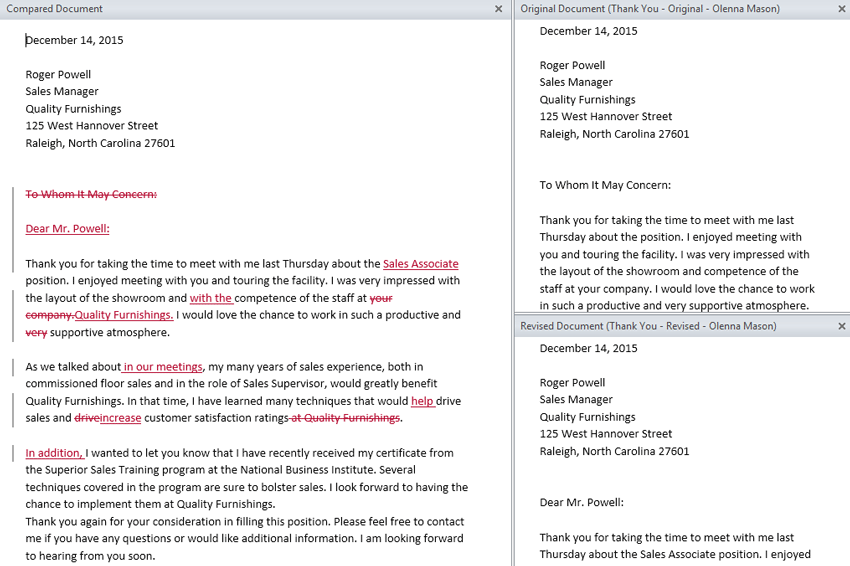
Tantangan!
Buka dokumen latihan kami.
Aktifkan Lacak Perubahan dan tampilkan Semua Markup.
Di grup Pelacakan, pilih Perlihatkan Revisi di Balon.
Di paragraf pertama, edit kalimat kedua sehingga berbunyi Senang bertemu dengan Anda dan berkeliling fasilitas.
Di paragraf kedua, ubah kata teknik menjadi strategi.
Ubah font surat menjadi Cambria, 12 pt.
Di paragraf ketiga, pilih kata Terima kasih dan masukkan komentar yang mengatakan Letakkan ini di baris yang sama dengan Perabotan Berkualitas.
Pada titik ini, surat Anda akan terlihat seperti ini ( Catatan : Warna markup mungkin berbeda):
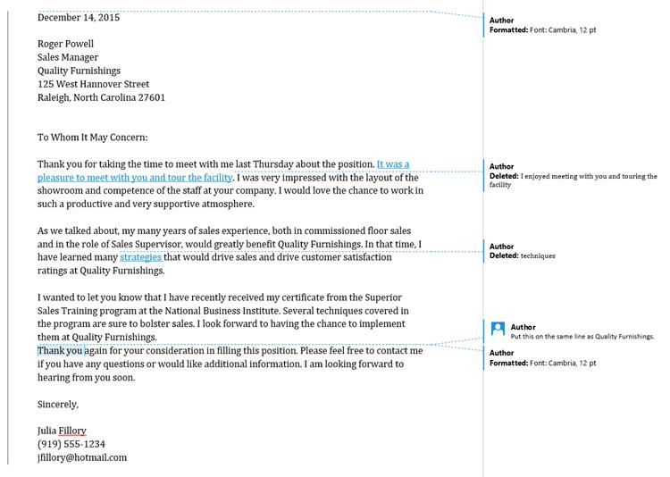
Klik Terima drop-down panah dan pilih Terima Semua Perubahan dan Berhenti Pelacakan.
Memeriksa dan Melindungi Dokumen (Inspecting and Protecting Documents)
Sebelum membagikan dokumen, Anda harus memastikan bahwa dokumen tersebut tidak menyertakan informasi apa pun yang ingin Anda rahasiakan. Anda mungkin juga ingin mencegah orang lain mengedit file Anda. Untungnya, Word menyertakan beberapa alat untuk membantu memeriksa dan melindungi dokumen Anda.
Pemeriksa Dokumen
Setiap kali Anda membuat atau mengedit dokumen, informasi pribadi tertentu dapat ditambahkan ke file secara otomatis, seperti informasi tentang pembuat dokumen. Anda dapat menggunakan Pemeriksa Dokumen untuk menghapus jenis informasi ini sebelum berbagi dokumen dengan orang lain.
Karena beberapa perubahan mungkin bersifat permanen, sebaiknya gunakan Simpan Sebagai untuk membuat salinan cadangan dokumen Anda sebelum menggunakan Pemeriksa Dokumen.
Untuk menggunakan Pemeriksa Dokumen:
Klik tab File untuk menuju ke tampilan Backstage.
Dari panel Info, klik Periksa Masalah, lalu pilih Periksa Dokumen dari menu tarik-turun.
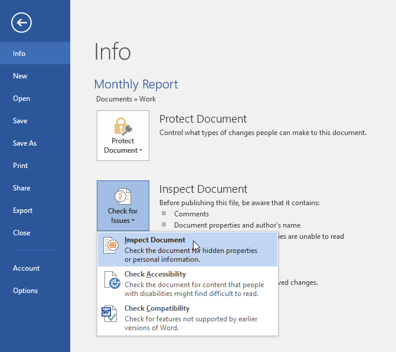
Pemeriksa Dokumen akan muncul. Centang atau hapus centang pada kotak, bergantung pada konten yang ingin Anda tinjau, lalu klik Inspect. Dalam contoh kita, kita akan membiarkan semuanya terpilih.
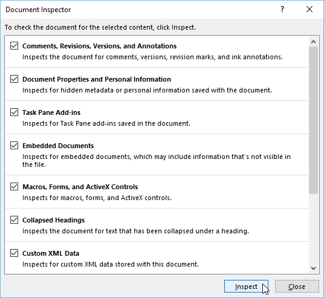
Hasil pemeriksaan akan menunjukkan tanda seru untuk setiap kategori yang menemukan data yang berpotensi sensitif, dan juga akan memiliki tombol Hapus Semua untuk setiap kategori tersebut. Klik Hapus Semua untuk menghapus data.
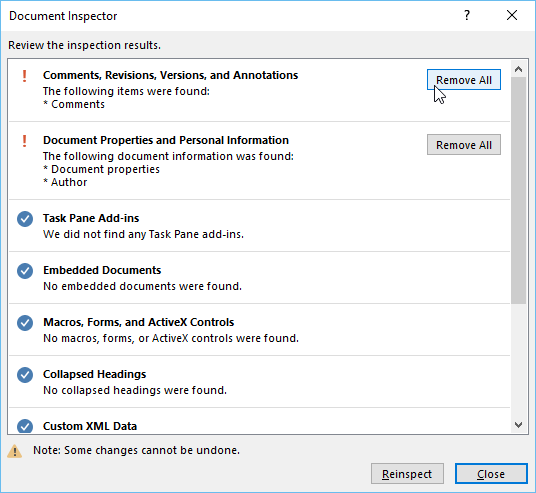
Setelah selesai, klik Tutup.
Melindungi dokumen Anda
Secara default, siapa pun yang memiliki akses ke dokumen Anda akan dapat membuka, menyalin, dan mengedit kontennya kecuali Anda melindunginya. Ada beberapa cara untuk melindungi dokumen, tergantung pada kebutuhan Anda.
Untuk melindungi dokumen Anda:
Klik tab File untuk menuju ke tampilan Backstage.
Dari panel Info, klik perintah Lindungi Dokumen.
Di menu tarik-turun, pilih opsi yang paling sesuai dengan kebutuhan Anda. Dalam contoh kita, kita akan memilih Mark as Final. Menandai dokumen Anda sebagai final adalah cara yang baik untuk mencegah orang lain mengedit file, sementara opsi lain memberi Anda lebih banyak kontrol jika Anda membutuhkannya.
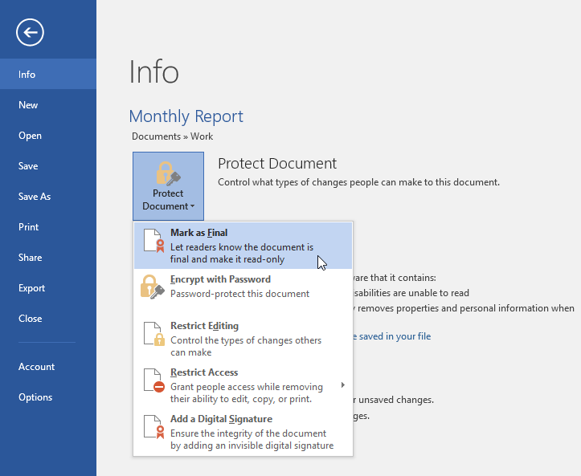
Sebuah kotak dialog akan muncul meminta Anda untuk menyimpan. Klik Oke.
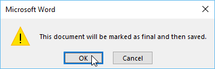
Kotak dialog lain akan muncul. Klik Oke.
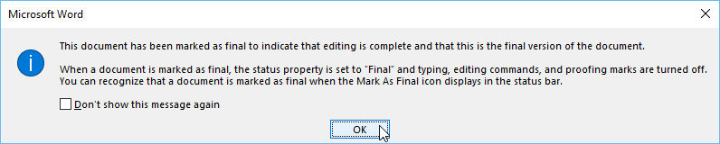
Dokumen akan ditandai sebagai final. Setiap kali orang lain membuka file, bilah akan muncul di bagian atas untuk mencegah mereka mengedit dokumen.
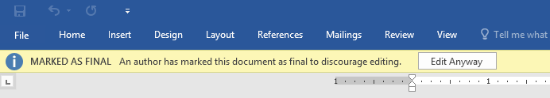
Menandai dokumen sebagai final sebenarnya tidak akan mencegah orang lain untuk mengeditnya karena mereka dapat memilih Edit Anyway. Jika Anda ingin mencegah orang mengedit dokumen, Anda bisa menggunakan opsi Batasi Akses.
Tantangan!
Buka dokumen latihan kami. Jika Anda membuka dokumen latihan kami untuk mengikuti pelajaran, pastikan untuk mengunduh salinan baru dengan mengeklik tautan lagi.
Gunakan Pemeriksa Dokumen untuk memeriksa dan menghapus informasi tersembunyi apa pun.
Lindungi dokumen dengan menandainya sebagai final.
Setelah selesai, bagian atas halaman Anda akan terlihat seperti ini:
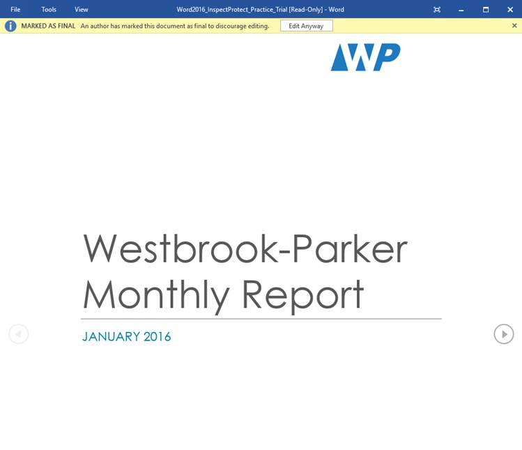